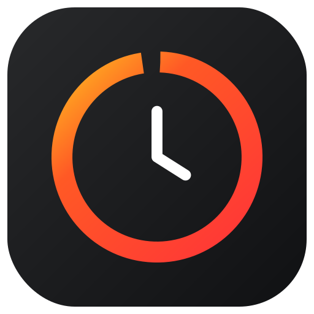
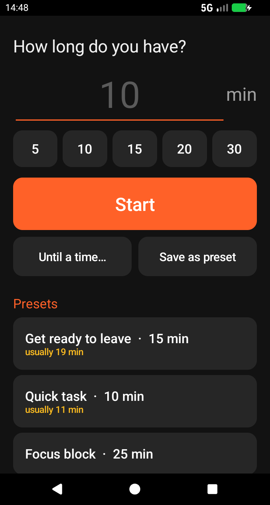
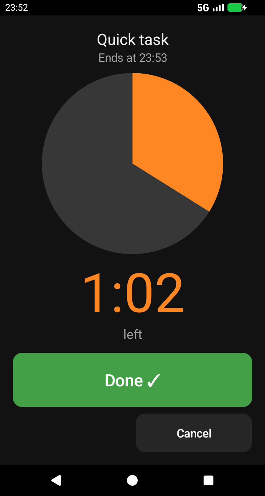
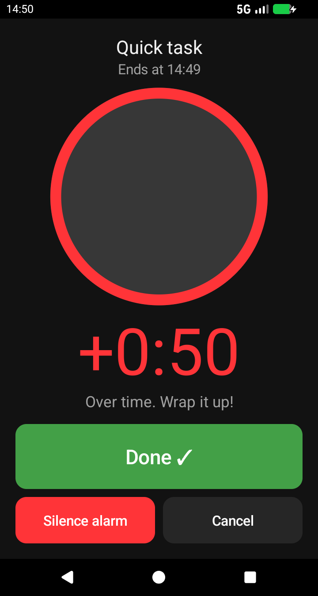
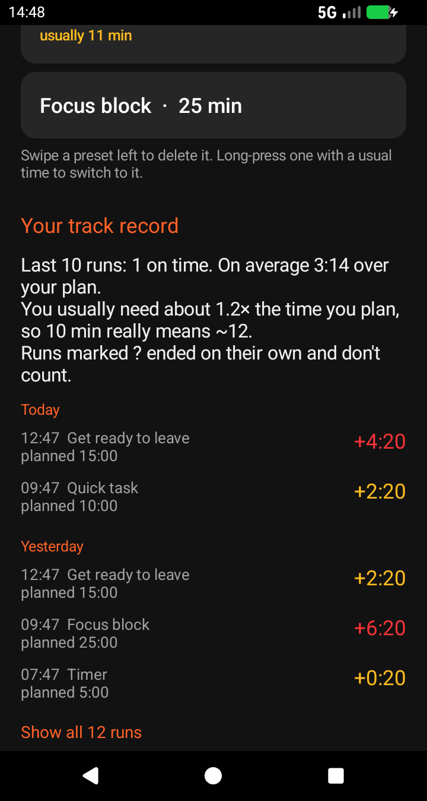

Say how long you have
Type minutes, tap 5, 10, 15, 20 or 30, pick one of your presets, or choose Until a time… when you need to leave at 8:40.

Time NudgeA countdown for people who lose track of time
Time Nudge speaks up as time runs out, sounds an alarm at zero, and keeps reminding you when you run over. Then it shows how long things really take.
Android 7.1 and later · Free and open source (GPL-3.0)


Type minutes, tap 5, 10, 15, 20 or 30, pick one of your presets, or choose Until a time… when you need to leave at 8:40.
A full-screen wedge shrinks and turns from yellow to orange to red, the screen stays on, and a voice tells you how much time is left, more often as the end gets closer.
Every finished run logs planned versus actual time, so next time you know that “10 minutes” really means about 12.
The nudges
Each alert comes with more beeps and a louder voice than the last. Here is a 10-minute timer:
Past zero the clock keeps counting up in red. You hear “N minutes over” every minute up to ten, then every five. The alarm sound stops by itself after two minutes, and a forgotten run closes itself after thirty.


Your track record
“You usually need about 1.2× the time you plan, so 10 min really means ~12.”
Presets show how long they usually take you: the median of your last ten runs, once there are three. Long-press a preset to switch it to that time, or swipe it left to delete it, with Undo. History keeps your last 100 runs.
Time Nudge asks Android for no internet access at all. No ads, no analytics, no account. Your presets and history live on your phone and nowhere else.
It was built for an old phone that stays at home, so it runs on Android 7.1 and later.
Download the APK from the latest GitHub release and open it on your phone. Android will ask you to allow installs from your browser or file manager the first time.
No Gradle needed. On Ubuntu:
sudo apt install android-sdk-platform-23 aapt \
apksigner dalvik-exchange zipalign
./build.sh # → build/TimeNudge.apkFull instructions in the README.